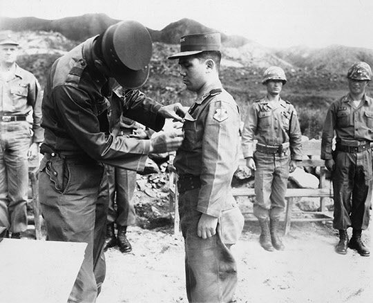
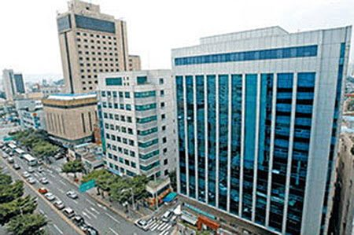
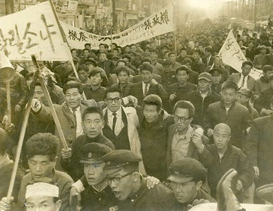

연재일 2014-08-20출처 조선일보 프리미엄조선 연재
훈장을 받고 있는 박태준.
이철승은 유효한 줄이었다. 박정희는 ‘군복을 벗어야 하는 위기’를 벗어나는 데는 성공했다. 그러나 곧 서울을 떠나야 했다. 그것은 거사의 공간에서 멀리 벗어나야 하는 괴로운 노릇이었다.
1961년 1월 박태준은 귀국했다. 그의 가방엔 ‘금속제 모형 선박’이 들어 있었다. 아내를 위한 선물이었다. 미제 화장품을 기대하고 있던 아내를 시무룩하게 만들기에 충분한 ‘공학도’다운 선물. 그나마 공돈으로 구한 것이었다. 미군 안내자가 한반도의 촌놈들을 주눅 들게 하려고 돌아오는 길에 데려간 라스베이거스, 그 도박의 요지경에서 그가 빙고에 덤벼 단번에 왕창 따먹은 돈을 풀었던 것이다.
박태준은 머뭇거릴 틈도 없이 대구로 내려가야 했다. 광주에 있다가 서울로 올라온 박정희가 어느새 다시 대구로 밀려난 것이었다. 박태준이 귀국한 무렵, 한국 육군 수뇌부에 중요한 인사가 이루어졌다. 장면 정권이 최경록 육군 참모총장을 2군 사령관으로 좌천시키고 장도영 장군을 그 자리에 앉힌 일이었다.
광주에 박혀 있다가 최경록의 배려로 육군본부 작전참모부장으로 올라와 있던 박정희는 그를 따라 대구로 내려갈 수밖에 없었다. 이종찬과 함께 군부의 두터운 존경과 신망을 받고 있던 최경록. 대구에 와서 머잖아 옷을 벗어 버리는(1961년 2월 17일) 그는 몇 년이 지난 뒤 ‘장면 정부로부터 군사자금에서 17억 환(약 250만 달러)을 헌납할 것’을 강요받았다고 털어놓는다.
서울 육군본부에서 밀려난 박정희가 고향과 진배없는 대구로 내려온 것은 몇 달 뒤라고 계산해놓은 ‘거사’를 위한 동지규합이 그만큼 더 어려워질 수밖에 없다는 뜻이었다. 지방에서는 거사를 일으켜보았자 기껏 ‘반란’을 벗어나기도 어렵겠거니와 ‘거의 모든 한국군대의 이름’으로 일으키려는 ‘거사의 조건’을 상실한 것이나 다름없었다.
박태준에게도 대구는 낯설지 않은 도시였다. 휴전 직후 육군대학이 대구에 있던 1953년 11월, 5기생으로 입교했던 것이다. 그때는 미혼의 육군 중령이었다. 7개월의 대구 시절 동안에 그는 하숙생 신세였다. 하숙집은 오랜 세월이 흐르고 나서 그의 기억을 자극하게 된다. 신성일이 교복 차림으로 드나들던 집, 신성일의 어머니가 손맛을 자랑하는 하숙집이었던 것이다. 신성일은 그로부터 십여 년쯤 지나서 한국 최고 스타배우로 떠오른다.
박정희가 인사하러 대구에 내려온 박태준을 위해 술자리를 마련했다. ‘박태준 귀국 환영연’이 열린 곳은 ‘청수원(淸水園)’이었다. 시인 구상(具常)을 비롯한 박정희와 마냥 허물없는 지우지기들이 단골로 모였던 요정, 300여 평 규모의 골기와 한옥집.
여기서 그해 추운 겨울의 박정희는 핏발 선 눈빛으로, 술기운 묻은 목소리로 “해치워야 해”라는 자기맹세를 내지르기도 하고 ‘대장기’가 나오는 일본 전국시대 대결전의 노래를 혼자서 외기도 했다. 청수원에 첫발을 들인 박태준에게는 마당의 향나무 몇 그루와 박정희가 ‘누님’이라 부른 주인장의 넉넉하고 푸짐한 인상이 오래 남는다.
상전벽해, 격세지감…옛 요정 ‘청수원’ 자리에는 빌딩이 들어섰다.
“성이 밀양 박씬데 홍길동 홍씨 같습니다. 동에 번쩍, 서에 번쩍, 그렇게 다니십니다. 아닙니다. 순서가 틀렸습니다. 서에 번쩍, 동에 번쩍, 입니다.”
박태준의 말은 광주(서)에 계시더니 언제 또 대구(동)에 오셨느냐, 언제까지 그렇게 쫓겨만 다니시겠느냐, 하는 뜻이었다.
“그렇게 홍길동처럼 신출귀물로 돌아다니다 보면 한곳에 오래 머무는 날도 오게 되겠지. 자, 오늘은 박태준이 밤이다. 부산 시절처럼 <낙화유수>나 해볼까?”
“이 강산 낙화유수 흐르는 봄에 새파란 젊은 꿈을 엮은 맹세야 어디로 도망가겠습니까?”
박태준이 정색을 갖추며 말했다. 그러나 박정희는 그저 유쾌하게 받았다.
“그런데 아직은 겨울이야. 이 겨울이 가면 봄이 오지. 오늘밤에는 박태준이 귀국 환영연이다. 자, 다시 건배!”
박정희의 동지가 아니면 알아듣지 못할 박정희의 은유적 표현, 그것이 그날 술자리에서 속옷의 끄트머리처럼 살짝 내비친 ‘거사’의 전부였다. 숱한 술잔이 오갔으나 박정희는 ‘거사’와 ‘혁명’의 첫 글자도 입 밖에 내지 않았다. 지우지기들에게 가끔 술주정처럼 소리쳤다는 “해치워야 해”도 없었고 대결전의 그 ‘대장기’도 휘날리지 않았다. 동지규합이 꼬이게 되어 근심이 많은지, 그저 묵묵히 때만 기다리고 있는지.
섣부른 짐작을 억누르는 박태준에게 자꾸 술잔을 건네며 미국 생활, 미국 모습의 이모저모에 대한 질문들을 던졌다. 겉으로 보기에는 거사의 꿈, 거대한 웅지를 깨끗이 포기한 사람 같았다.
1월 13일 박태준은 육군본부 경력관리기구 위원에 뽑혔다. 미국에서 공부한 보따리를 풀어놓으라는 명령 같았다. 그는 미국 국방부에서 널리 사용하는 OR기법을 바탕으로 인사관리의 새로운 시스템을 정립하기로 했다.
‘지휘 실권이 없는’ 박정희는 대구에서 거사 진행표를 짜고 있었다. 2월 17일 김종필이 예비역에 편입되었다. 해병 소장 김동하도 예비역이었다. 이들에게 ‘병력 동원’은 불리한 여건이었다. 단지 장면 정권을 통해서도 확실한 희망을 보지 못하는 ‘민심의 향방’만이 유리한 여건이었다.
그해 3월, 질 좋은 지하자원(텅스텐)을 팔아 달러를 벌어오는 대한중석이 또다시 정치적 스캔들에 휘말렸다. ‘국영’ 대한중석을 ‘민영’으로 불하하려는 계획 단계에서 장면 총리 연루설이 제기되었다.
장면을 공격하는 최선봉은 김영삼 의원이었다. 그는 집권 민주당에서 갈려나와 야당으로 변신한 ‘신민당’(1960년 9월 22일) 소속이었다. 그때로부터 33년이 더 지나 대통령을 맡게 되는 김영삼은 ‘민의원 중석수출계약사건조사위원회’ 신민당 소속 조사위원 자격으로 장면을 정조준했다.
민주당(여당) 소속 조사위원 3인이 3월 21일 공동성명을 발표하여, 야당 조사위원이 아무런 근거 없이 장면 총리 연루설을 유포한 것은 정치적 작희(作戱)로 볼 수밖에 없다고 주장하였다. 그러나 김영삼은 장면의 연루설을 거듭 주장하면서 민주당이 그러한 성명을 일방적으로 발표한 것은 부정을 은폐하려는 ‘자유당식 수법’이라고 응수했다.
장면 정권의 막바지에 불거진 대한중석 스캔들은 몇 가지를 시사한다. 정치자금 조달에서 장면 정권도 도덕성의 의심을 받고 있었다는 것, 원래 하나였다가 둘로 갈라진 민주당과 신민당의 갈등과 대립이 극점에 도달해 있었다는 것, 그리고 최고 국영기업인 대한중석이 부실경영에 시달리고 있었다는 것, 그런 기업이 정치자금의 보이지 않는 젖줄 역할을 하면서 정치권력에 휘둘리고 있었다는 것.
중석(重石), 텅스텐. 달러가 궁핍했던 1953년, 한미(韓美)중석협정이 체결되고 미국이 한국산 텅스텐을 수입하면서 달러가 수북수북 들어오자 이승만 대통령이 대한중석 사장을 부둥켜안고 “내 아들아” 외치게 만들었다는 그 광물. 대한중석의 텅스텐은 1961년의 보잘 것 없는 한국 수출총액에서 가장 큰 규모를 차지하고 있었다. 먹을 것이 많은 대한중석, 그래서 심심찮게 정치적 스캔들에 말려들었다.
대한중석이 임자를 제대로 만나 최대 달러 박스로서의 역할도 제대로 해내게 되는 때는 1965년 벽두이다. 그때 대한중석에 ‘제대로 된 임자’를 보내는 사람은 박정희이고, 그 임자는 박태준이다.
1961년 3월 21일「데모규제법, 반공 임시특별법」입법 반대 데모 광경.
대한중석 스캔들을 공격하는 김영삼이 언론의 이목을 끌었던 3월이 가고 4월이 돌아왔다. 혁명이라 불리는 4‧19가 첫돌을 맞았다. 때마침 보릿고개였다. 시골마다 보릿고개를 넘느라 끼니를 굶는 아이들이 부황 든 얼굴로 시래기죽이라도 기다리는 봄날이었다. 헐벗은 야산을 듬성듬성 지켜선 소나무들이 봄물 오른 새순을 배고픈 사람들에게 내주느라 다시 수난을 겪어야 했다. ‘잔인한 4월’이었다.
그러나 서울의 거리는 자유만복이었다. 젊은이들이 몽둥이를 들고 국회의사당 단상을 점거했다. 맨발과 맨손으로 북한을 해방하러 간다고 떼를 지어 아우성을 쳤다. 날마다 시위대가 넘쳐났다. 자유를 만끽하는 사람들의 거대한 물결, 이것을 ‘인파’라 했다. 굶주린 아이들과 자유만복의 인파, 이 모순의 1961년 4월이 저물고 5월이 왔다.
남녘에 만발한 아카시아 향기가 한강을 건너는 새벽이었다, 그 새벽은.
‘말 채찍소리도 고요히 밤을 타서 강을 건너니 새벽에 대장기를 에워싼 병사 떼들을 보네.’ 술자리의 박정희가 가끔 시음(詩吟)한 일본 한시(漢詩)가 서울에서 실현된 새벽이었다, 그 새벽은.
그 새벽, 박태준은 어디서 무엇을 하고 있었을까?


